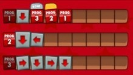

Após o sucesso na implementação da primeira e segunda parte, chegou a hora de implementar a terceira e última parte do Cargo-Bot para computador. Para que as jogadas ocorram da mesma forma que no iOS, falta apenas que os programas, além de comandos básicos, possam chamar também outros programas.
Os comandos básicos, a detecção de um acidente e o funcionamento do braço mecânico continuam como descritos no Laboratório 04a. Além disso, o funcionamento comandos condicionais, a representação e as cores das caixas, e o número de programas continuam como descritos no Laboratório 07a.
Agora, além dos comandos básicos e condicionais, um programa pode também chamar outro programa, inclusive ele mesmo. A chamada a um programa será representado pelo número do mesmo, ou seja, se o programa de número i chama o programa de número j durante sua execução, um dos comandos de i será o número j, com 1 ≤ i,j ≤ 9.
Da mesma forma que os comandos básicos, a chamada de um programa pode ou não ser subordinado a um comando condicional. Por exemplo, os comandos do Programa 1 da figura abaixo, que serão representados na versão para computador por "DN3Y21*", faz com que o braço mecânico desça, chama o Programa 3, caso ele não esteja segurando uma caixa, depois chama o Programa 2, caso ele esteja segurando uma caixa da cor amarela, e por último chama novamente ele mesmo.

Note que os programas do Cargo-Bot poderão entrar em loop infinito. Por este motivo, um dos parâmetros da entrada desta última versão será o número máximo de execuções de programas. Após alcançar o número máximo de execuções de programas, seu programa deve ignorar qualquer chamada a novos programas, e executar apenas comandos básicos, se existirem. Considerando o exemplo acima, caso seja atingido o número máximo de execuções ao executar o Programa 1, ele deverá apenas executar o comando básico D, ignorando as chamadas aos programas 3, 2 e 1.
| # | Entrada | Saída |
| 1 | 3 5 1 9 14 ... G.. G.. Y.. B.. DARBRNL1* | ... ..G ..G ..Y ..B |
| 2 | 3 6 3 6 36 .Y. .B. .Y. .B. .Y. .B. 32231* DR* DL* | .B. .Y. .B. .Y. .B. .Y. |
| 3 | 4 5 3 13 17 .... .YB. .YY. .BB. .BY. R2* 32* NDBLBDRRDLNL* | .... B..Y B..Y B..Y B..Y |
| 4 | 6 5 1 9 26 ...... Y..... Y..... YG..G. YGGGG. NDGDRDNL1* | Um acidente ocorreu |
| 5 | 8 6 3 8 60 ........ ........ ........ ........ ........ .YYYYYY. RR2* DN3YDL2* RDR* | .......Y .......Y .......Y .......Y .......Y .......Y |